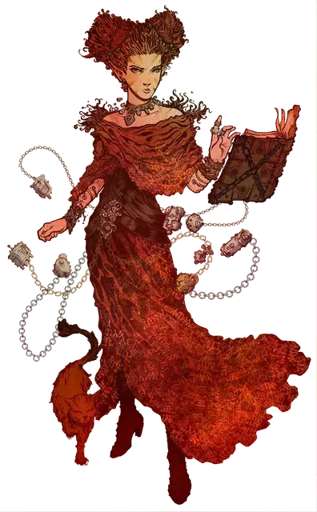

Мэри Греймалкин
Mary Greymalkin
Средний Гуманоид (Эладрин), нейтральный, именной НИП

Класс Доспеха 14 (наручи защиты, кольцо защиты)
Хиты 45 (7к8 + 14)
Скорость 30 футов
| мод | спас | ||
|---|---|---|---|
| СИЛ | 10 | +0 | +1 |
| ЛОВ | 12 | +1 | +2 |
| ТЕЛ | 10 | +0 | +1 |
| мод | спас | ||
|---|---|---|---|
| ИНТ | 14 | +2 | +3 |
| МДР | 14 | +2 | +5 |
| ХАР | 15 | +2 | +5 |
Навыки Магия +4, Медицина +4, Природа +4, Религия +4
Чувства тёмное зрение 60 футов, пассивное Восприятие 12
Языки Общий, Бездны, Инфернальный, Небесный, Сильван, Эльфийский
Опасность 2 (450 опыта)
Бонус мастерства +2
Особенности
Особое снаряжение. Мэри носит наручи защиты [bracers of defense] и кольцо защиты [ring of protection], а так же владеет колодой некоторых вещей [deck of Several Things].
Фейское присутствие (перезаряжается после короткого отдыха). Мэри может заставить каждое существо в пределах 10 футов от нее преуспеть в спасброске Мудрости Сл 12, иначе оно станет очарованным или испуганным ею (по выбору Мэри) до конца её следующего хода.
Наследие фей. Мэри совершает с преимуществом спасброски от очарования, и магия не может её усыпить.
Использование заклинаний. Мэри является заклинателем 5-го уровня. Её базовой характеристикой является Харизма (Сл спасброска от заклинания 12, +4 к попаданию атаками заклинаниями). Она восстанавливает ячейки заклинаний после окончания короткого или продолжительно отдыха. Она знает следующие заклинания колдуна:
• Заговоры (неограниченно): леденящее прикосновение [chill touch], мистический заряд [eldritch blast], волшебная рука [mage hand];
• 1−3 уровни (2 ячейки 3-го уровня): тьма [darkness], сглаз [hex], гипнотический узор [hypnotic pattern], туманный шаг [misty step], воображаемая сила [phantasmal force], невидимый слуга [unseen servant].
Действия
Боевой посох. . Рукопашная атака оружием: +2 к попаданию, досягаемость 5 футов, одна цель. Попадание: 3 (1к6) дробящего урона.
Описание
Мэри претендует на принадлежность к легендарному роду как внучка вампирши Дрелнза [drelnza] - сама она потомок Игвильв и Бабы Яги. Она заключила колдовской договор с духами этих предков, но тщательно контролирует свои отношения с ними, чтобы не попасть под их темное влияние.
Она также утверждает, что в прошлом её обучала Тингиззард, ведьма, обитающая в болотах у горы Белая Плюма. Помимо работы на Картофила, Мэри стремится сопровождать экспедицию, чтобы отыскать в Барьерных пиках редкие ингредиенты для своих зелий.
Мэри - жуткая, похожая на ведьму фигура, всегда окруженная вихрящимися магическо-механическими безделушками ее собственного изготовления. Ее часто можно увидеть тасующей колоду нескольких предметов, и она будет пытаться незаметно склонить членов партии вытянуть карту. Мэри всегда сопровождает ее знакомая, кошка с горящими глазами.